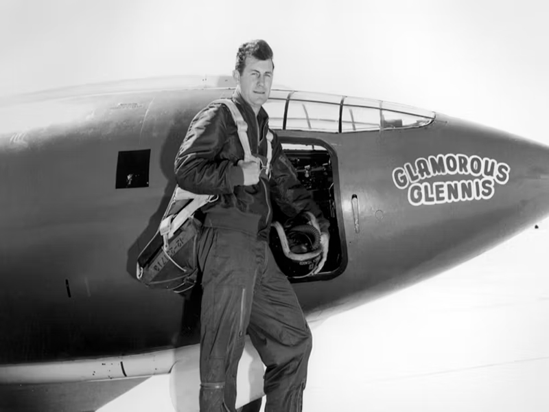
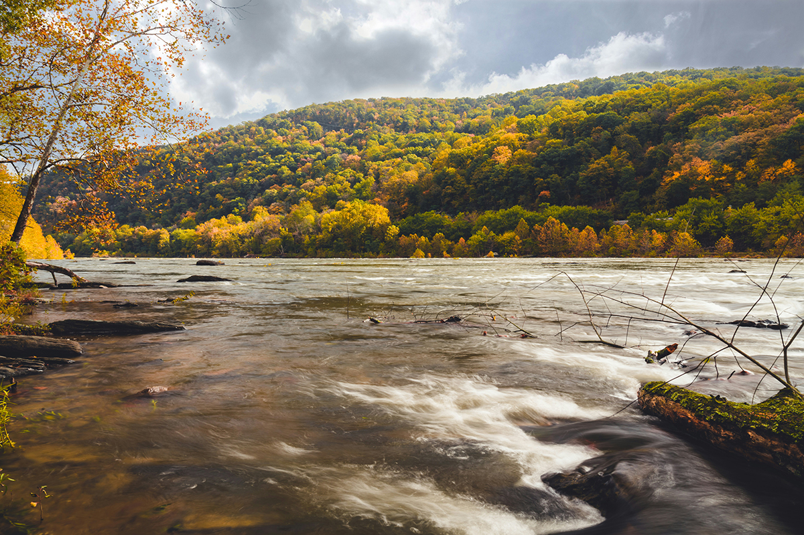

Today, West Virginia continues to evolve, embracing new industries while preserving its rich heritage. The state leads in areas like aerospace, technology, and tourism, while maintaining strong connections to its historical roots in energy and manufacturing.
Key Historical Periods
Pre-Colonial Era (Before 1600s)

The region was home to various Native American cultures, including the Paleo-Indians, Adena, and Fort Ancient peoples. The Adena culture, known for their burial mounds, flourished from 1000 BC.
Colonial Period (1600s-1776)
European settlement began in the early 1700s. The region was contested between various colonial powers and Native American nations. The first permanent settlement was established in 1727.
Path to Statehood (1861-1863)
During the Civil War, West Virginia separated from Virginia, becoming the only state formed by seceding from a Confederate state. President Lincoln signed the statehood bill on December 31, 1862.
Industrial Heritage

Coal Mining
Coal mining has shaped West Virginia's economy and culture. The industry brought significant development but also struggles, including the famous Battle of Blair Mountain in 1921.
Railroad Era
The railroad system transformed West Virginia, connecting remote areas with thriving industrial growth. The B&O Railroad played a crucial role in the state's development.
Notable Historical Figures
Mother Jones
"The Most Dangerous Woman in America" fought for workers' rights and played a crucial role in the Mine Wars.
Learn More →

Chuck Yeager
The first pilot to break the sound barrier, born in Myra, WV. His achievements revolutionized aviation.
Learn More →Pearl S. Buck
Nobel and Pulitzer Prize-winning author born in Hillsboro, WV. Her works bridged Eastern and Western cultures.
Learn More →Significant Events
1859
John Brown's Raid
The raid on Harpers Ferry heightened tensions leading to the Civil War.
1921
Battle of Blair Mountain
The largest labor uprising in U.S. history, involving 10,000 coal miners.
1972
Buffalo Creek Disaster
A devastating flood that led to major changes in mining safety regulations.
Into the Modern Era

West Virginia's blend of tradition and progress
Visit Historical Sites

Harpers Ferry
Experience the convergence of Civil War history, industrial heritage, and natural beauty.
Plan Your Visit →Independence Hall
Visit the birthplace of West Virginia in Wheeling, where statehood was debated and achieved.
Plan Your Visit →